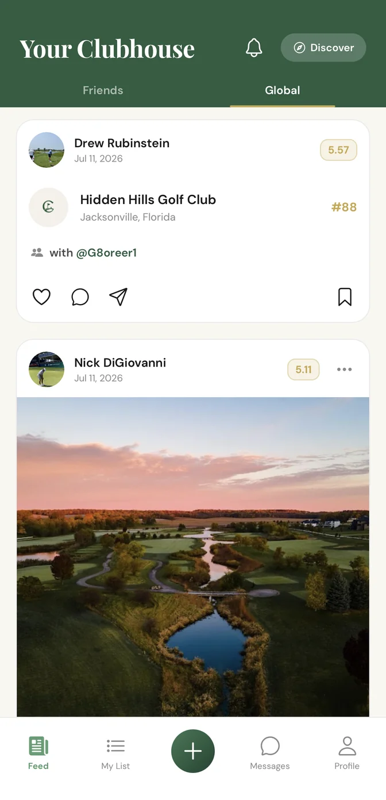

Facet 01 · Now building
Your Clubhouse
Your Course, Ranked.
See where your friends played, what they shot, and the courses worth chasing next.
- Rank every course you've played, head-to-head.
- Track plays, scores, and the people you played with.
- Follow friends and see what's worth chasing.
- Discover where to play next, wherever you land.
